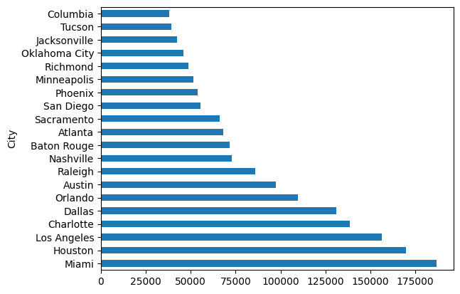

About the Project
This project analyzes United States accident data to identify key trends and patterns. By examining city-specific accident frequencies, weather conditions, and temporal variations, the project aims to uncover critical factors influencing road safety. The goal is to provide actionable insights and recommendations for improving traffic safety nationwide.
GitHub RepositoryAccident Frequency by City
High concentration in few cities
A small number of cities experience the majority of accidents, indicating high concentration in urban areas.
Yearly Increase in Accidents
Accidents rising steadily each year.
There is a consistent year-over-year increase in the number of accidents, indicating a growing trend in accident frequency.
Impact of Temperature
Moderate temperatures see more accidents.
Most accidents occur in moderate temperatures (68°F to 77°F), with higher frequencies in winter and specific months like January.
Peak Accident Times: Office Hours
Accidents peak at office start/end.
Most accidents occur during the start and end of office hours, suggesting high traffic volumes and potential rush hour issues.
Accidents by Day and Night
Nighttime accidents have different patterns.
Daytime accidents cover a broader temperature range, while nighttime accidents are concentrated in specific temperature ranges.
Weather Conditions
More accidents in fair weather.
Accidents are more frequent in fair weather conditions, despite bad weather also contributing to accident rates.